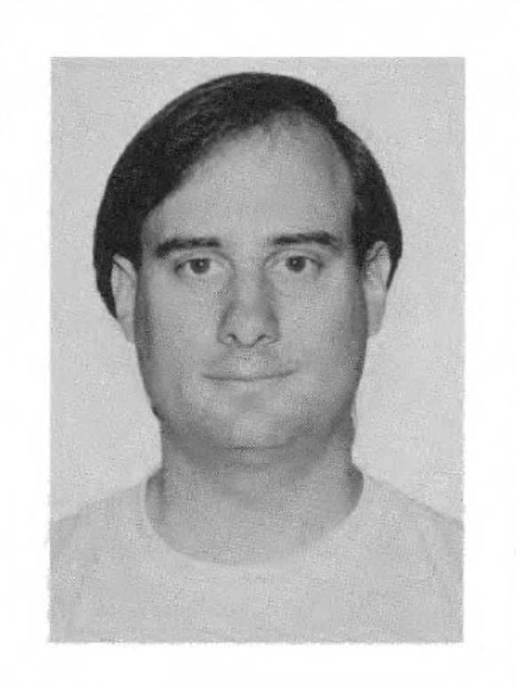

Randolph Grant Smith
January 9, 1969 - September 4, 2021

Biography
Randy grew up in Pacific Palisades, California. He graduated from the Thacher School in Ojai in 1987, deferred college for a year of study abroad in Finland, and then earned his B.A. in History from Georgetown University in 1992, where he was active in theater and met his future wife, Karen Dahl. He worked as a legal assistant at Wilmer, Cutler & Pickering in Washington, DC before entering UCLA Anderson, earning his MBA in 1996. Randy spent more than 12 years at Microsoft in Redmond, then served as VP of Product Management at DTS, and in 2017 became VP of Corporate and Business Development at Syntonic. He was diagnosed with cancer at age 49 and continued working and living life fully alongside his treatment for nearly four years.
Photos

Education
- Thacher School | High school | 1987
- Study abroad in Finland
- Georgetown University | B.A. | History | 1992
- UCLA Anderson School of Management | M.B.A. | 1996
Career
- Legal Assistant | Wilmer, Cutler & Pickering | Washington, DC | Pre-MBA
- Senior Business Development Manager, Digital Media Division | Microsoft | Redmond, WA | 12+ years
- Vice President of Product Management | DTS Inc. | Calabasas, CA
- Vice President of Corporate and Business Development | Syntonic | Seattle, WA
Family
- spouse: Karen Dahl (met at Georgetown)
- daughters: Sarah Smith (age 20 at father's death), Megan Smith (age 17)
- parents: Ann Smith, George Smith
- parents location: Pacific Palisades, CA
- brother: Morgan Smith
- aunt: Jean Garrett (Los Angeles)
Interests
Rock Climbing | Biking | Theater
Obituary
Randy Smith, a beloved husband and father with a wry sense of humor and an impressive career in product development and strategy for tech companies, died peacefully September 4 at age of 52 at his home in Bellevue, Washington, due to cancer. Randy grew up in Pacific Palisades, California and graduated from Thacher School in Ojai in 1987. He deferred a year of college to do study abroad in Finland and then returned to begin at Georgetown University where he majored in history and was active in theater. After earning his BA 1992, he earned his MBA from Anderson School of Business at UCLA.
Memorial Legacy
Not available.